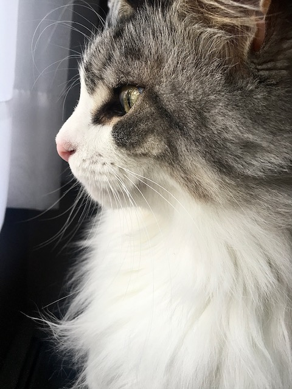

Since I was a young child, I've always loved animals. Anything that I could pet, I would. It did not matter if it was furry or scaly.
That's why I was overjoyed to get a cat.
Then another. Then maybe a couple more.
I have no doubt that I'll be a crazy old cat lady later in life.
But, that is neither here nor there. Currently, I have three cats. There all unique in their own silly ways.
Throughout this website you can find information and, more importantly, very cute pictures of the cats.
Click on the name of the cat you'd like to learn more about!
Characteristics are scored on a five point scale:
| Silliness | Intelligence | Affectionate | Fluffy | Anxious | Talkative | |
|---|---|---|---|---|---|---|
| Zoe | 1 | 5 | 1 | 3 | 4 | 5 |
| Bean | 3 | 4 | 3 | 5 | 1 | 2 |
| Frank | 4 | 1 | 5 | 4 | 1 | 3 |
This website is dedicated to Chloe, 2013-2023
